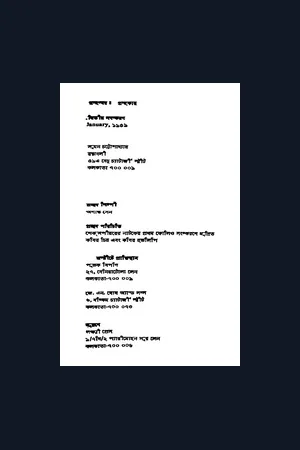

✓ Free Open-Access
ইংরাজী সাহিত্যের ইতিহাস - কুন্তল চট্টোপাধ্যায়
Ingorajee Sahitjer Eetihas - Kuntl Chottopadhjajo
ইন্টারনেট আর্কাইভ (Internet Archive)উপন্যাস ও সাহিত্য (General Fiction)
📥 Direct Free Download Links
Prefer to read in our interactive reader?
Open in BookStore App →
Search, filter, and stream 2,900+ books with our rich dual-script storefront.
| Language | Bengali (বাংলা) |
|---|---|
| Available In | EPUB |
| Access | 100% Free & Open (Digital Preservation) |